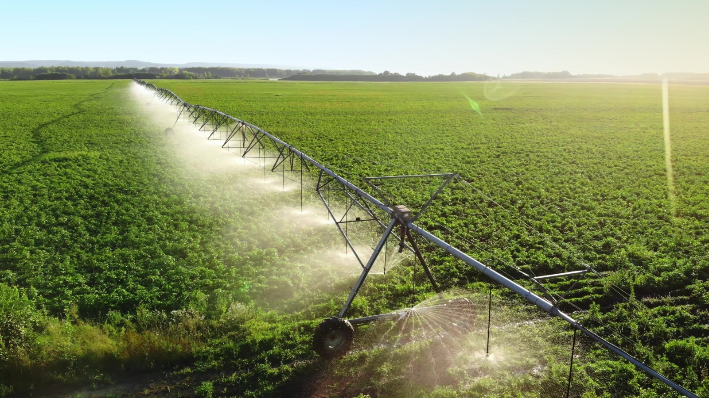

Welcome to Krushi Mitra, your trusted digital companion for smarter and more sustainable farming. Our platform is designed to help farmers make informed decisions through the power of technology. Whether you are a small-scale farmer or a commercial grower, Krushi Mitra provides the information and tools you need to improve crop productivity and increase profitability. With features such as crop recommendations, plant disease detection, weather updates, fertilizer guidance, market prices, and government scheme information, Krushi Mitra brings all essential agricultural services together in one easy-to-use platform. Our goal is to bridge the gap between traditional farming practices and modern agricultural innovations, making farming more efficient, sustainable, and rewarding. These kinds of digital advisory features are widely recognized as valuable for supporting farmers in decision-making.
